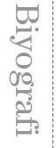

Romanları 34 dilde yayımlanan Ömer Zülfü Livaneli, 1946 yılında doğdu. Ankara’da Maarif Koleji’nde okudu, Stockholm’de felsefe ve müzik eğitimi gördü.
1972 yılında fikirlerinden dolayı askeri cezaevinde yattı, 11 yıl sürgünde yaşadı.
Harvard ve Princeton gibi saygın üniversitelerde konferanslar ve dersler veren, romanları, fikirleri ve müziği ile dünya basınında övgülerle karşılanan bir sanatçı olan Livaneli, edebiyat, müzik ve sinema alanlarında 30’dan fazla ulusal ve uluslararası ödül sahibi.
Livaneli, 1999 yılında San Remo’da En İyi Besteci ödülüne layık görüldü. Müzik eserleri Londra, Moskova, Berlin, Atina,İzmir Senfoni orkestraları tarafından icra edildi ve Zubin Mehta, Simeon Kogan gibi şeflerce yönetildi.
Türkiye dışında Çin Halk Cumhuriyeti, İspanya, Kore ve Almanya’da da çok satanlar arasına giren romanlarıyla, Balkan Edebiyat Ödülü’ne, ABD’de Barnes and Noble Büyük Yazar Ödülü’ne, İtalya ve Fransa’da Yılın Kitabı Ödülü’ne, Türkiye’de ise Yunus Nadi Ödülü’ne ve Orhan Kemal Roman Ödülü’ne layık görüldü.
Livaneli, dünya kültür ve barışına yaptığı katkılardan ötürü 1996 yılında Paris’te UNESCO tarafından Büyükelçilikle onurlandırıldı ve Genel Direktör danışmanlığına atandı.
2002-2006 yılları arasında TBMM’de ve Avrupa Konseyi’nde milletvekilliği görevinde bulundu.
http://www.livaneli.gen.tr
http://www.livaneli.net